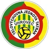

TJ Slovan Bojná VI. liga Severovýchod · ročník 2026/27
- Miesto
- 16.zo 16
- Body
- 415 zápasov
- Skóre
- 16:551–1–13
- Forma
- Prehra TJ Tatran Uhrovec 1:3
- Prehra ŠK Vegum Dolné Vestenice 2:5
- Prehra Slovan Šimonovany-Partizánske 2:3
- Prehra TJ Družstevník Jacovce 0:5
- Prehra TJ Slovan Krušovce 0:4
- Najbližší zápas
- OFK Kovarcene 7. 3. · 14:30 · vonku
Zimná prestávka. Áčko začína v nedeľu 7. marca 2027 na ihrisku OFK Kovarce.
Výsledky
- OFK PráznovceU19 · 15. kolo · doma Výhra, 5:2
- TJ Slovan KrušovceA-mužstvo · 15. kolo · vonku Prehra, 0:4
- TJ-ŠK RadošinaU15 · 5. kolo · doma Výhra, 5:0
- TJ Družstevník JacovceA-mužstvo · 14. kolo · doma Prehra, 0:5
- OTJ Horné ObdokovceU19 · 14. kolo · vonku Prehra, 0:8
- Slovan Šimonovany-PartizánskeA-mužstvo · 13. kolo · doma Prehra, 2:3
- ŠK Vegum Dolné VesteniceA-mužstvo · 12. kolo · vonku Prehra, 2:5
Program
- OFK PrašiceU19 · 16. kolo · doma 11:00
- OFK KovarceA-mužstvo · 16. kolo · vonku 14:30
- FK Iskra NovákyA-mužstvo · 17. kolo · doma 14:30
- TJ Slovan KrušovceU19 · 17. kolo · vonku 11:00
- TJ Baník SebedražieA-mužstvo · 18. kolo · vonku 15:00
VI. liga Severovýchod
| # | Tím | Z | V | R | P | Skóre | B |
|---|---|---|---|---|---|---|---|
| 1 | 15 | 12 | 3 | 0 | 39:13 | 39 | |
| 2 | 15 | 10 | 2 | 3 | 30:12 | 32 | |
| 3 | 15 | 7 | 4 | 4 | 46:19 | 25 | |
| 4 | 15 | 7 | 4 | 4 | 30:18 | 25 | |
| 5 | 15 | 7 | 3 | 5 | 32:24 | 24 | |
| 6 | 15 | 7 | 3 | 5 | 44:22 | 24 | |
| 7 |  TJ Tatran Uhrovec | 15 | 7 | 2 | 6 | 17:18 | 23 |
| 8 | 15 | 7 | 0 | 8 | 19:26 | 21 | |
| 9 | 15 | 6 | 2 | 7 | 32:30 | 20 | |
| 10 | 15 | 6 | 2 | 7 | 26:33 | 20 | |
| 11 | 15 | 5 | 3 | 7 | 22:38 | 18 | |
| 12 | 15 | 5 | 3 | 7 | 33:40 | 18 | |
| 13 | 15 | 4 | 4 | 7 | 25:34 | 16 | |
| 14 | 15 | 4 | 3 | 8 | 25:41 | 15 | |
| 15 | 15 | 4 | 3 | 8 | 19:32 | 15 | |
| 16 | 15 | 1 | 1 | 13 | 16:55 | 4 |
Všetky tímy
| Tím | Súťaž | Miesto | Posledný |
|---|---|---|---|
| A-mužstvomuži | VI. liga Severovýchod | 16.zo 16 | Prehra, 0:4 |
| U19Starší dorast | IV. liga U19 | 14.zo 16 | Výhra, 5:2 |
| U15Starší žiaci | IV. liga starších žiakov U15 | 6.z 11 | Výhra, 5:0 |
| U13Mladší žiaci | IV. liga mladších žiakov U13 | 5.z 11 | Výhra, 3:2 |
| U11Prípravka | III. liga prípraviek U11 | 2.zo 6 | Remíza, 2:2 |
2024/25: dorast U19 vyhral IV. ligu ZsFZ, žiaci U15 súťaž ObFZ Topoľčany.